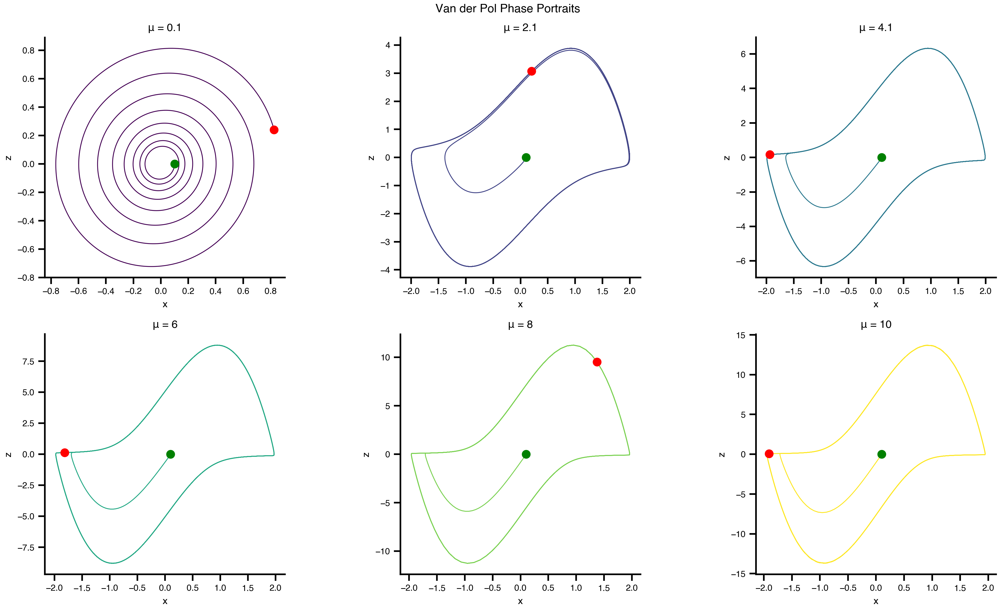
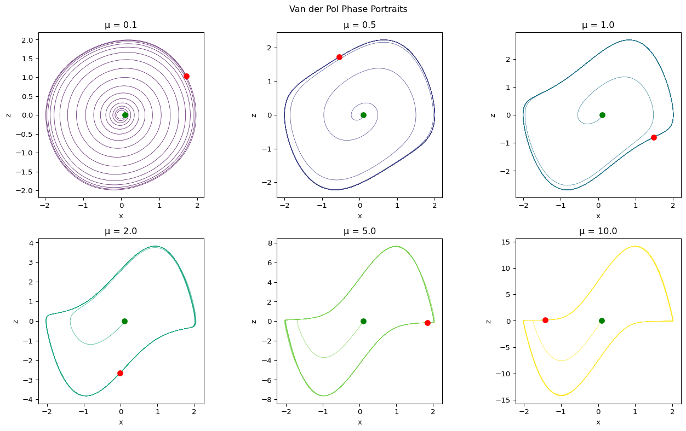
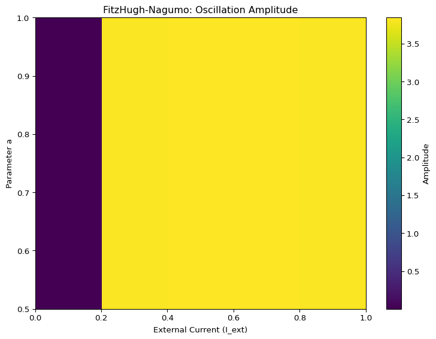
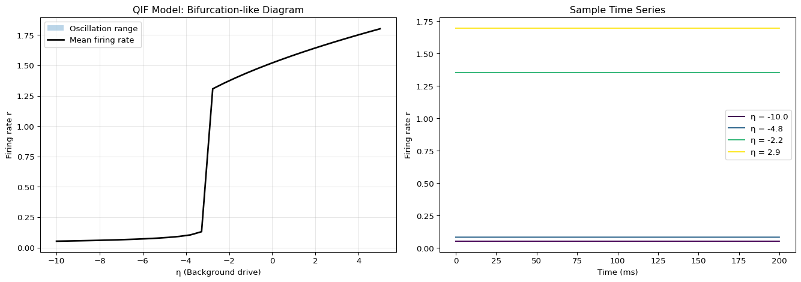

import os
import shutil
import numpy as np
import matplotlib.pyplot as plt
from matplotlib import cm
from pyrates import grid_search, CircuitTemplate, clearPyRates Parameter Analysis
This guide demonstrates how to use TVBO models with PyRates for parameter sweeps and sensitivity analysis.
Overview
PyRates provides powerful tools for parameter analysis:
- Grid Search: Simulate multiple parameter combinations in parallel
- Parameter Sweeps: 1D/2D exploration of parameter space
- Sensitivity Analysis: Identify critical parameters
The workflow:
- Define model in TVBO
- Export to PyRates format
- Run parameter sweeps using PyRates
grid_search() - Analyze and visualize results
Setup
Example 1: Van der Pol Parameter Sweep
Explore how the damping parameter μ affects oscillation behavior.
Define Model in TVBO
from tvbo import Dynamics
from IPython.display import Markdown, display
# Create Van der Pol oscillator
vdp = Dynamics("Dynamics")
vdp.name = "VdP"
vdp.add_parameter("mu", value=1.0, description="Damping parameter")
vdp.add_state_variable("x", equation="z", initial_value=0.1)
vdp.add_state_variable("z", equation="mu*(1 - x**2)*z - x", initial_value=0.0)
# Display model summary using generate_report
display(Markdown(vdp.generate_report(format="markdown")))/Users/leonmartin_bih/tools/tvbo/.venv/lib/python3.13/site-packages/requests/__init__.py:113: RequestsDependencyWarning: urllib3 (2.6.3) or chardet (6.0.0.post1)/charset_normalizer (3.4.4) doesn't match a supported version!
warnings.warn(VdP
State Equations
\[ \dot{x} = z \] \[ \dot{z} = - x + \mu*z*\left(1 - x^{2}\right) \]
Parameters
| Parameter | Value | Unit | Description |
|---|---|---|---|
| \(\mu\) | 1.0 | N/A | Damping parameter |
Export to PyRates
# Create module directory
os.makedirs('_sweep_vdp', exist_ok=True)
with open('_sweep_vdp/__init__.py', 'w') as f:
f.write('')
# Export
vdp.to_yaml(format="pyrates", filepath='_sweep_vdp/model.yaml')
print("Model exported to _sweep_vdp/model.yaml")Model exported to _sweep_vdp/model.yamlRun Parameter Sweep
# Define parameter grid
mu_values = [0.1, 0.5, 1.0, 2.0, 5.0, 10.0]
param_grid = {'mu': mu_values}
# Map parameters to model variables
param_map = {
'mu': {'vars': ['VdP_op/mu'], 'nodes': ['p']}
}
# Simulation settings
T = 100.0
dt = 1e-3
dts = 1e-2
# Run grid search
print("Running parameter sweep...")
results, results_map = grid_search(
circuit_template='_sweep_vdp.model.VdP_circuit',
param_grid=param_grid,
param_map=param_map,
simulation_time=T,
step_size=dt,
sampling_step_size=dts,
outputs={'x': 'p/VdP_op/x', 'z': 'p/VdP_op/z'},
solver='scipy',
vectorize=False, # Required for single-node circuits (PyRates bug)
clear=True
)
print(f"Sweep complete! Results shape: {results.shape}")
print(f"Results map: {results_map}")Running parameter sweep...
Compilation Progress
--------------------
(1) Translating the circuit template into a networkx graph representation...
...finished.
(2) Preprocessing edge transmission operations...
...finished.
(3) Parsing the model equations into a compute graph...
...finished.
Model compilation was finished.
Simulation Progress
-------------------
(1) Generating the network run function...
(2) Processing output variables...
...finished.
(3) Running the simulation...
...finished after 0.07323199999518692s.
Sweep complete! Results shape: (10000, 12)
Results map: mu
VdP_circuit_0 0.1
VdP_circuit_1 0.5
VdP_circuit_2 1.0
VdP_circuit_3 2.0
VdP_circuit_4 5.0
VdP_circuit_5 10.0Visualize Results
# Time series for different μ values
fig, axes = plt.subplots(2, 3, figsize=(14, 8))
axes = axes.flatten()
time = results.index
# Get x and z columns - they are ordered by parameter index
x_cols = [c for c in results.columns if c[0] == 'x']
z_cols = [c for c in results.columns if c[0] == 'z']
for i, mu in enumerate(mu_values):
ax = axes[i]
# Columns are indexed by circuit instance number
x_col = x_cols[i]
z_col = z_cols[i]
ax.plot(time, results[x_col], label='x')
ax.plot(time, results[z_col], alpha=0.7, label='z')
ax.set_title(f'μ = {mu}')
ax.set_xlabel('Time (ms)')
ax.set_ylabel('State')
ax.legend(loc='upper right')
ax.set_xlim([0, T])
plt.tight_layout()
plt.suptitle('Van der Pol Oscillator: Effect of Damping (μ)', y=1.02)
plt.show()
Phase Space Analysis
# Phase portraits for different μ values
fig, axes = plt.subplots(2, 3, figsize=(14, 8))
axes = axes.flatten()
colors = cm.viridis(np.linspace(0, 1, len(mu_values)))
for i, mu in enumerate(mu_values):
ax = axes[i]
x_col = x_cols[i]
z_col = z_cols[i]
x = results[x_col].values
z = results[z_col].values
ax.plot(x, z, color=colors[i], linewidth=0.5)
ax.scatter(x[0], z[0], color='green', s=50, zorder=5, label='Start')
ax.scatter(x[-1], z[-1], color='red', s=50, zorder=5, label='End')
ax.set_title(f'μ = {mu}')
ax.set_xlabel('x')
ax.set_ylabel('z')
ax.set_box_aspect(1)
plt.tight_layout()
plt.suptitle('Van der Pol Phase Portraits', y=1.02)
plt.show()
# Cleanup
shutil.rmtree('_sweep_vdp')
Example 2: 2D Parameter Sweep
Explore two parameters simultaneously.
Define FitzHugh-Nagumo Model
from tvbo import Dynamics
from IPython.display import Markdown, display
# FitzHugh-Nagumo model
fhn = Dynamics("Dynamics")
fhn.name = "FHN"
fhn.add_parameter("a", value=0.7)
fhn.add_parameter("b", value=0.8)
fhn.add_parameter("tau", value=12.5)
fhn.add_parameter("I_ext", value=0.5)
fhn.add_state_variable("v", equation="v - v**3/3 - w + I_ext", initial_value=0.0)
fhn.add_state_variable("w", equation="(v + a - b*w)/tau", initial_value=0.0)
# Display model summary using generate_report
display(Markdown(fhn.generate_report(format="markdown")))
# Also show the generated Python code
print("=== Generated Python Code ===")
print(fhn.render_code(format="python"))FHN
State Equations
\[ \dot{v} = I_{ext} + v - w - \frac{v^{3}}{3} \] \[ \dot{w} = \frac{a + v - b*w}{\tau} \]
Parameters
| Parameter | Value | Unit | Description |
|---|---|---|---|
| \(a\) | 0.7 | N/A | None |
| \(b\) | 0.8 | N/A | None |
| \(\tau\) | 12.5 | N/A | None |
| \(I_{ext}\) | 0.5 | N/A | None |
=== Generated Python Code ===
import numpy as np
import scipy.special
def FHN(
current_state,
t,
a=0.7,
b=0.8,
tau=12.5,
I_ext=0.5,
stimulus=False,
):
stim_t = stimulus(t) if stimulus else 0.0
# State variables
v = current_state[0]
w = current_state[1]
# Derivatives
dv_dt = I_ext + v - w - 1 / 3 * v**3
dw_dt = (a + v - b * w) / tau
derivatives = np.array([dv_dt, dw_dt])
return derivatives
2D Grid Search via Sequential Sweeps
PyRates grid_search performs 1D sweeps efficiently. For 2D parameter exploration, we run sequential sweeps, varying one parameter while fixing the other.
# Export model
os.makedirs('_sweep_fhn', exist_ok=True)
with open('_sweep_fhn/__init__.py', 'w') as f:
f.write('')
fhn.to_yaml(format="pyrates", filepath='_sweep_fhn/model.yaml')
# Parameter values
a_values = np.linspace(0.5, 1.0, 5)
I_values = np.linspace(0.0, 1.0, 5)
# Simulation settings
T = 200.0
dt = 1e-3
dts = 1e-1
# Store amplitudes for 2D heatmap
amplitudes = np.zeros((len(a_values), len(I_values)))
print("Running 2D parameter sweep via sequential 1D sweeps...")
# For each value of 'a', sweep over I_ext
for i, a_val in enumerate(a_values):
# Update model with fixed 'a' value
fhn_temp = Dynamics("Dynamics")
fhn_temp.name = "FHN"
fhn_temp.add_parameter("a", value=a_val)
fhn_temp.add_parameter("b", value=0.8)
fhn_temp.add_parameter("tau", value=12.5)
fhn_temp.add_parameter("I_ext", value=0.5)
fhn_temp.add_state_variable("v", equation="v - v**3/3 - w + I_ext", initial_value=0.0)
fhn_temp.add_state_variable("w", equation="(v + a - b*w)/tau", initial_value=0.0)
fhn_temp.to_yaml(format="pyrates", filepath='_sweep_fhn/model.yaml')
# 1D sweep over I_ext
param_grid = {'I': I_values.tolist()}
param_map = {'I': {'vars': ['FHN_op/I_ext'], 'nodes': ['p']}}
results, _ = grid_search(
circuit_template='_sweep_fhn.model.FHN_circuit',
param_grid=param_grid,
param_map=param_map,
simulation_time=T,
step_size=dt,
sampling_step_size=dts,
outputs={'v': 'p/FHN_op/v'},
solver='scipy',
vectorize=False, # Required for single-node circuits (PyRates bug)
clear=True
)
# Extract amplitudes for each I value
v_cols = list(results.columns)
for j in range(len(I_values)):
v = results[v_cols[j]].values
v_steady = v[len(v)//2:] # Use second half
amplitudes[i, j] = np.max(v_steady) - np.min(v_steady)
print(f" a = {a_val:.2f} complete")
print("2D sweep complete!")Running 2D parameter sweep via sequential 1D sweeps...
Compilation Progress
--------------------
(1) Translating the circuit template into a networkx graph representation...
...finished.
(2) Preprocessing edge transmission operations...
...finished.
(3) Parsing the model equations into a compute graph...
...finished.
Model compilation was finished.
Simulation Progress
-------------------
(1) Generating the network run function...
(2) Processing output variables...
...finished.
(3) Running the simulation...
...finished after 0.08863499999279156s.
a = 0.50 complete
Compilation Progress
--------------------
(1) Translating the circuit template into a networkx graph representation...
...finished.
(2) Preprocessing edge transmission operations...
...finished.
(3) Parsing the model equations into a compute graph...
...finished.
Model compilation was finished.
Simulation Progress
-------------------
(1) Generating the network run function...
(2) Processing output variables...
...finished.
(3) Running the simulation...
...finished after 0.06503124997834675s.
a = 0.62 complete
Compilation Progress
--------------------
(1) Translating the circuit template into a networkx graph representation...
...finished.
(2) Preprocessing edge transmission operations...
...finished.
(3) Parsing the model equations into a compute graph...
...finished.
Model compilation was finished.
Simulation Progress
-------------------
(1) Generating the network run function...
(2) Processing output variables...
...finished.
(3) Running the simulation...
...finished after 0.04547962499782443s.
a = 0.75 complete
Compilation Progress
--------------------
(1) Translating the circuit template into a networkx graph representation...
...finished.
(2) Preprocessing edge transmission operations...
...finished.
(3) Parsing the model equations into a compute graph...
...finished.
Model compilation was finished.
Simulation Progress
-------------------
(1) Generating the network run function...
(2) Processing output variables...
...finished.
(3) Running the simulation...
...finished after 0.04719737501000054s.
a = 0.88 complete
Compilation Progress
--------------------
(1) Translating the circuit template into a networkx graph representation...
...finished.
(2) Preprocessing edge transmission operations...
...finished.
(3) Parsing the model equations into a compute graph...
...finished.
Model compilation was finished.
Simulation Progress
-------------------
(1) Generating the network run function...
(2) Processing output variables...
...finished.
(3) Running the simulation...
...finished after 0.05053645800217055s.
a = 1.00 complete
2D sweep complete!Amplitude Analysis
# Plot heatmap
fig, ax = plt.subplots(figsize=(8, 6))
im = ax.imshow(amplitudes, origin='lower', aspect='auto',
extent=[I_values[0], I_values[-1], a_values[0], a_values[-1]],
cmap='viridis')
ax.set_xlabel('External Current (I_ext)')
ax.set_ylabel('Parameter a')
ax.set_title('FitzHugh-Nagumo: Oscillation Amplitude')
plt.colorbar(im, ax=ax, label='Amplitude')
plt.tight_layout()
plt.show()
# Cleanup
shutil.rmtree('_sweep_fhn')
Example 3: Bifurcation-like Analysis
Detect qualitative changes in dynamics across parameter range.
QIF Neural Mass Model
from tvbo import Dynamics
from IPython.display import Markdown, display
# Quadratic Integrate-and-Fire mean-field model
qif = Dynamics("Dynamics")
qif.name = "QIF"
# Parameters
qif.add_parameter("tau", value=1.0)
qif.add_parameter("eta", value=-5.0) # Background drive
qif.add_parameter("J", value=15.0) # Coupling strength
qif.add_parameter("Delta", value=1.0) # Heterogeneity
# State variables
qif.add_state_variable("r", equation="Delta/(tau*pi) + 2*r*v", initial_value=0.1)
qif.add_state_variable("v", equation="v**2 + eta + J*r*tau - (pi*r*tau)**2", initial_value=-2.0)
# Display model summary using generate_report
display(Markdown(qif.generate_report(format="markdown")))QIF
State Equations
\[ \dot{r} = 2*r*v + \frac{\Delta}{\pi*\tau} \] \[ \dot{v} = \eta + v^{2} + J*r*\tau - \pi^{2}*r^{2}*\tau^{2} \]
Parameters
| Parameter | Value | Unit | Description |
|---|---|---|---|
| \(\tau\) | 1.0 | N/A | None |
| \(\eta\) | -5.0 | N/A | None |
| \(J\) | 15.0 | N/A | None |
| \(\Delta\) | 1.0 | N/A | None |
Sweep Over η (Background Drive)
# Export
os.makedirs('_sweep_qif', exist_ok=True)
with open('_sweep_qif/__init__.py', 'w') as f:
f.write('')
qif.to_yaml(format="pyrates", filepath='_sweep_qif/model.yaml')
# Parameter grid
eta_values = np.linspace(-10, 5, 30)
param_grid = {'eta': eta_values.tolist()}
param_map = {'eta': {'vars': ['QIF_op/eta'], 'nodes': ['p']}}
# Long simulation to find steady states
T = 500.0
dt = 1e-3
dts = 1e-1
print("Running bifurcation-like sweep...")
results_qif, results_map_qif = grid_search(
circuit_template='_sweep_qif.model.QIF_circuit',
param_grid=param_grid,
param_map=param_map,
simulation_time=T,
step_size=dt,
sampling_step_size=dts,
outputs={'r': 'p/QIF_op/r'},
solver='scipy',
vectorize=False, # Required for single-node circuits (PyRates bug)
clear=True
)
print(f"Sweep complete! Results shape: {results_qif.shape}")Running bifurcation-like sweep...
Compilation Progress
--------------------
(1) Translating the circuit template into a networkx graph representation...
...finished.
(2) Preprocessing edge transmission operations...
...finished.
(3) Parsing the model equations into a compute graph...
...finished.
Model compilation was finished.
Simulation Progress
-------------------
(1) Generating the network run function...
(2) Processing output variables...
...finished.
(3) Running the simulation...
...finished after 2.399549958005082s.
Sweep complete! Results shape: (5000, 30)Bifurcation-like Diagram
fig, axes = plt.subplots(1, 2, figsize=(14, 5))
# Get all r columns
r_cols = list(results_qif.columns)
# Extract steady-state firing rates
r_min = []
r_max = []
r_mean = []
for i, eta in enumerate(eta_values):
r = results_qif[r_cols[i]].values
# Use last 20% for steady state
r_steady = r[int(0.8*len(r)):]
r_min.append(np.min(r_steady))
r_max.append(np.max(r_steady))
r_mean.append(np.mean(r_steady))
# Bifurcation-like diagram
ax = axes[0]
ax.fill_between(eta_values, r_min, r_max, alpha=0.3, label='Oscillation range')
ax.plot(eta_values, r_mean, 'k-', linewidth=2, label='Mean firing rate')
ax.set_xlabel('η (Background drive)')
ax.set_ylabel('Firing rate r')
ax.set_title('QIF Model: Bifurcation-like Diagram')
ax.legend()
ax.grid(True, alpha=0.3)
# Select sample traces
ax = axes[1]
sample_indices = [0, 10, 15, 25] # Indices into eta_values
colors = plt.cm.viridis(np.linspace(0, 1, len(sample_indices)))
for idx, color in zip(sample_indices, colors):
eta = eta_values[idx]
r = results_qif[r_cols[idx]].values
t = results_qif.index.values
start_idx = int(0.6 * len(r))
ax.plot(t[start_idx:] - t[start_idx], r[start_idx:],
color=color, label=f'η = {eta:.1f}')
ax.set_xlabel('Time (ms)')
ax.set_ylabel('Firing rate r')
ax.set_title('Sample Time Series')
ax.legend()
plt.tight_layout()
plt.show()
# Cleanup
shutil.rmtree('_sweep_qif')
Summary
TVBO enables seamless integration with PyRates parameter analysis:
- Define models in TVBO’s structured format
- Export to PyRates with
model.to_yaml(format="pyrates") - Analyze using PyRates
grid_search()for parallel parameter sweeps - Visualize results to understand parameter effects
Key Functions
from pyrates import grid_search
results, results_map = grid_search(
circuit_template='module.file.circuit_name',
param_grid={'param': [values]}, # Parameter combinations
param_map={'param': {'vars': ['op/var'], 'nodes': ['node']}},
simulation_time=T,
step_size=dt,
sampling_step_size=dts,
outputs={'name': 'node/op/var'},
solver='scipy',
vectorize=False, # Required for single-node circuits
)Next Steps
- PyRates Bifurcation: Numerical continuation and bifurcation detection
- PyRates Interoperability: Basic round-trip examples